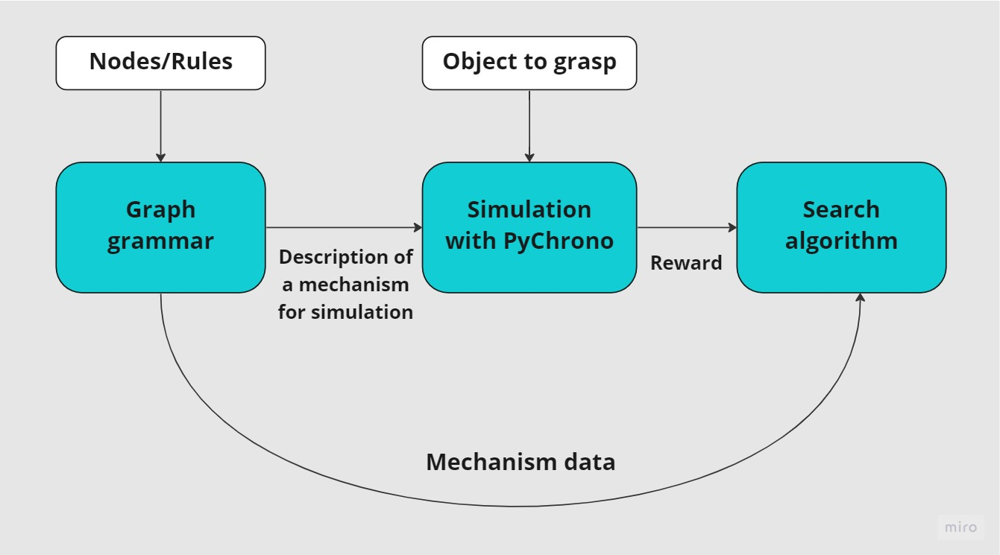
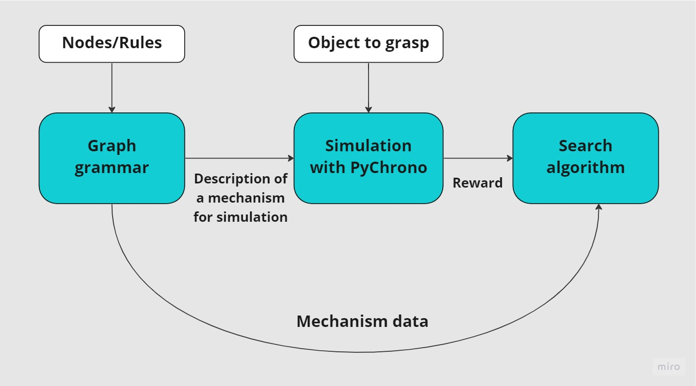

Project description¶
Rostok is an open source Python framework for generative design of linkage mechanisms for robotic purposes. It provides a framework to describe mechanisms as a graph, set an environment, perform simulation of generated mechanisms, get a reward as a quantitative value of the generated design, and search for the best possible design.
A user can utilize the entire framework as a pipeline to generate a set of suboptimal designs, or utilize the modules and submodules as independent parts. The framework allows to implement custom generative rules, modify search and optimization algorithms.
Currently the framework allows to perform co-design of open chain linkage mechanisms. Co-design consists in simultaneously searching for the mechanical structure and the trajectories of the robot to get the best possible performance.
Project Structure¶
There are four main blocks:
Graph Grammar – is needed for creation, modification, and extraction of the data from the graphs that contain the entire information of generated mechanisms
Virtual Experiment – is the simulation needed for quantitative analysis of the behavior and performance of generated mechanisms specified by grammar graphs
Trajectory Optimization – finds suboptimal joint trajectories needed to efficiently perform the desired motion
Search Algorithm – looks for optimal graph to represent mechanism topology
 

More detailed description of the Algorithms Description.